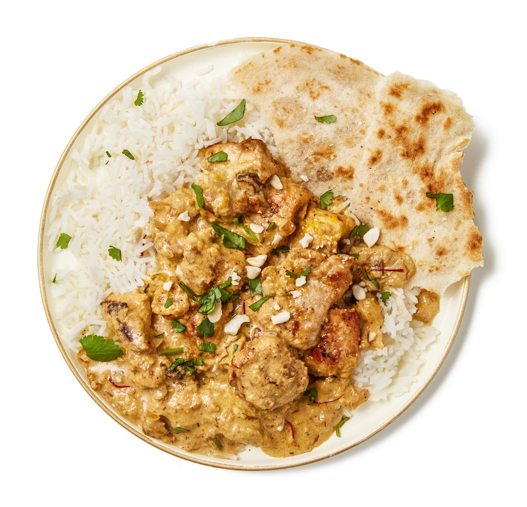

Chicken korma

This elegant, Mughal dish, rich with cream and nuts and perfumed spices, has, in Britain, been largely relegated to the status of generic “mild curry”; suitable for children and those not “up to” the chilli in a tikka masala, say. But if you habitually skip over it on menus, do give the sophisticated korma another try – it’s far too good for the kids to keep to themselves.
Cut the meat into large, bite-sized chunks and put in a bowl with half the yoghurt. Stir, cover and leave to marinate at room temperature for at least three hours, or up to 12 hours in the fridge. (If using tofu or vegetables, a half-hour marination at room temperature should be sufficient.) Half an hour before you start cooking, take it out of the fridge, along with the remaining yoghurt.
Peel and finely chop the onion. Peel and crush the garlic, and peel and finely grate or chop the ginger (you want two tablespoons of ginger for this), then set those last two aside for now. Heat the cream just to warm it through, take off the heat and stir in the saffron and half the rose water. Put the cashews in a small bowl with five tablespoons of warm water and leave to soak.
Put the fat in a wide, heavy-based pan for which you have a lid and set it over a medium-high heat. Once hot, add the cinnamon and green cardamom, and saute until you hear the cardamom start to pop. Add the chicken, in batches, if necessary, brown on all sides, then lift the meat out of the pan and set aside.
Turn down the heat to medium-low, add the onion and fry, stirring often so it doesn’t catch, until soft and browned; there should be enough fat left in the pan, but if the onion threatens to stick, add a little more. Meanwhile, blend the cashews and their soaking water into a smooth paste.
Stir the garlic, ginger, sultanas and grated nutmeg into the onion mix, cook for a couple of minutes, then stir in the cashew paste. Take off the heat, leave to cool for a couple of minutes, then stir in the remaining yoghurt and the salt. (Note that lower-fat yoghurts tend to split when heated, so avoid using them for this.)
Add the chicken to the pan, along with any juices and as much of its marinade as possible, then bring to a very gentle simmer. Cover the pan tightly, turn the heat down as low as possible and leave to stew for about 30 minutes, until the meat is cooked through (cut into a piece to check).
Stir the infused cream into the pan and cook very gently for another five minutes. Meanwhile, extract the seeds from the black cardamom pod – this smoky-flavoured spice is well worth seeking out in south Asian food specialists or online – crush them in a mortar and add to the korma pan.
Taste the gravy and adjust the seasoning as necessary. Add the remaining rose water, if you think it’s needed (rose waters vary hugely in strength, so you may decide you have enough in there already). Serve the korma with steamed rice and/or parathas or other flatbreads. If you’re out to impress, sprinkle a few extra chopped cashews, dried fruit and/or finely chopped coriander on top, too.